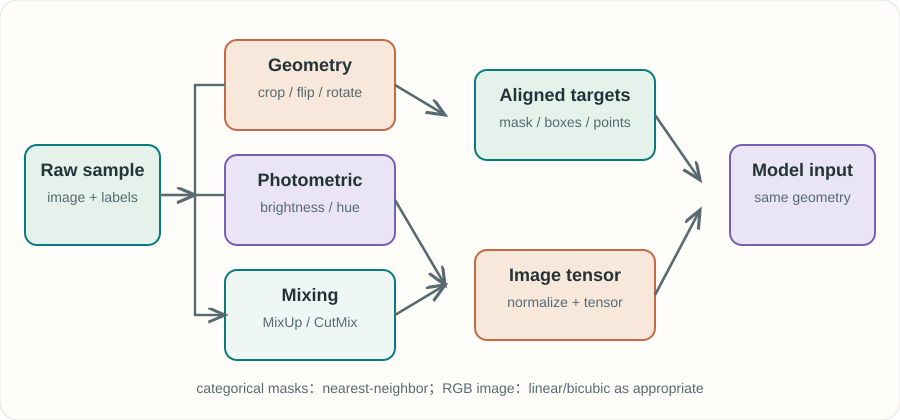
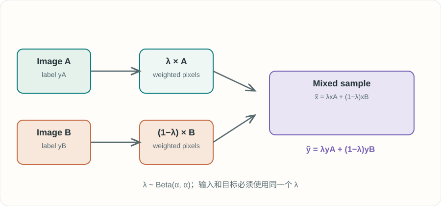
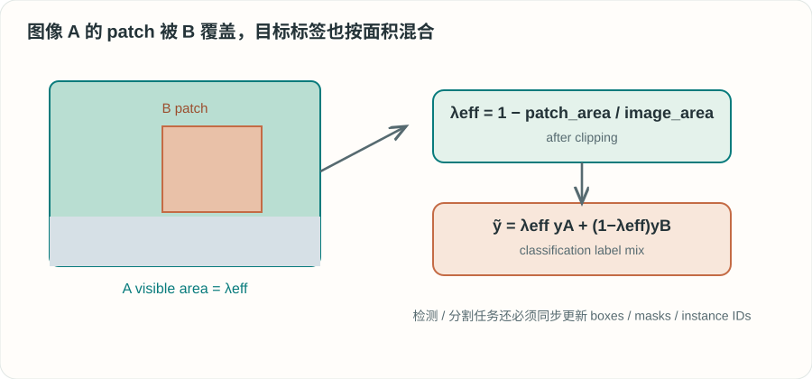

CHAPTER 23 · 数据与增强
数据增强：把标签约束一起变换
增强不是给图片加滤镜，而是对训练分布施加有意义的变化。分类标签、分割 mask、检测框和关键点必须与图像几何同步；MixUp 与 CutMix 还会改变监督目标。本章从标签保持条件推导几何增强、颜色增强和样本混合，并说明如何避免评估泄漏。
增强的前提：变换后标签仍然成立
训练集有限，模型容易记住采集设备、背景、拍摄角度等偶然线索。数据增强通过构造与任务一致的变化，让模型学习更稳定的决策边界。但增强成立有一个前提：变换后的监督标签仍然描述新样本。对分类而言，水平翻转可能保留类别；对医学图像，左右方向可能带有临床语义，翻转未必安全；对 OCR，水平翻转可能把文字变成无效样本。
增强应由任务定义驱动，而不是从热门配置表复制。每个操作都要回答三个问题：它模拟哪种真实变化？哪些目标字段必须同步变换？它是否会改变标签语义或制造训练集中不存在的图像分布？

几何变换：image、mask、box 与 keypoint 必须同步
随机裁剪、翻转、旋转、仿射变换会改变空间坐标。语义分割必须对 image 与 mask 使用同一个随机几何参数；检测任务还要更新 box 坐标、裁剪越界框并过滤无效框；关键点任务要同步更新坐标并决定超出画面点的可见性标记。Albumentations 的 Compose 与 target processors 可以将这些字段绑定到同一随机变换序列，但 bbox_params 的坐标格式、label_fields 和 keypoint 参数必须明确设置。
插值策略也由目标类型决定。自然图像像素可以用线性或更高阶插值；类别 mask 存储离散 ID，必须使用 nearest-neighbor，否则 0 与 2 的边界可能被插值成不存在的类别 1。深度图、热图等连续目标则可按数值语义选择线性插值。
颜色增强与归一化：只变换应该变的对象
Brightness、Contrast、Saturation、Hue、Gamma、ColorJitter 和噪声增强主要模拟曝光、白平衡、传感器噪声等外观变化。它们一般只作用于 image，不应改变分割 mask 或类别标签。对于遥感、多光谱、病理和医学图像，通道含义可能不是普通 RGB；随机色相偏移可能破坏真实的物理意义。
归一化通常放在随机增强之后：先在训练数据上估计通道均值与标准差，再将像素映射到模型预期尺度。不要用验证/测试集统计量调节训练预处理；预训练权重还可能要求特定 resize、crop、mean/std 和通道顺序。输入数据是 OpenCV BGR 还是 PIL RGB，也必须在 pipeline 中显式处理。
随机增强与确定性预处理要分开：训练阶段可以随机 crop、flip、color jitter；验证和测试阶段应使用固定 resize/crop 与同一归一化，保证重复评估结果可比较。
MixUp：凸组合输入与软标签
MixUp 从两个训练样本构造一个虚拟样本：图像按同一系数线性插值，one-hot 标签也按同一系数混合。系数 λ 通常从 Beta(α, α) 分布采样；α 越大，采样更常落在中间区域，混合强度通常更高。模型不再只在训练样本点上拟合标签，还要学习两样本之间的平滑行为。
λ ~ Beta(α, α)；图像和标签必须使用相同混合权重。

MixUp 对分类最直接。检测、分割等密集任务需要重新定义像素级标签或 box 的组合规则；不能只把分类的软标签公式原样复制过去。
CutMix：用真实可见面积修正目标
CutMix 从第二张图像裁剪矩形 patch，替换第一张图像中的同一区域。对于分类，目标标签按两张图像在合成图中实际可见的面积比例混合。关键细节是：先采样 λ 和矩形大小，再把矩形裁剪到图像边界；矩形越界后实际面积可能改变，因此标签系数应根据裁剪后的 mask 面积重新计算，而不是盲目沿用采样时的 λ。
patch 是图像 B 覆盖到 A 的区域；面积比例必须使用裁剪后真实矩形。

对分割任务，mask 也必须按同一 patch 替换；对检测任务，box 要按 patch 可见区域裁剪并处理截断对象。若 patch 只保留了对象的一小部分，标签权重和对象可见面积之间的关系需要按具体任务定义。
可复现的数据 pipeline 与数据泄漏
正确顺序通常是：先按患者、视频、设备、拍摄场景或原始样本组划分 train/validation/test，再仅对训练 split 进行随机增强。不要先复制增强样本再随机划分，否则同一原图的旋转版可能落入训练集、原图落入测试集，导致评估过于乐观。医学切片、视频帧、连拍照片和同一对象的多视角样本尤其需要 group-aware split。
pipeline 需要显式记录：输入颜色空间、像素范围、resize/crop 参数、mask 插值、box 格式、随机种子策略、归一化统计量和数据版本。若训练增强会改变目标字段，应在单元测试中检查图像、mask、box 的几何一致性；只检查模型 loss 是否下降是不够的。

类别不平衡不是多做几次增强就能解决
类别不平衡可能来自采样频率、标注成本、场景自然分布或正负样本定义。可选方法包括 class-weighted loss、重采样、focal loss、hard-example mining 和补充少数类数据；它们解决的是不同问题。对少数类图像做复制或颜色扰动并不会创造新的形态信息，也可能让模型过拟合重复样本。
增强策略需要报告按类别的有效样本数量、增强前后类别比例和验证集召回率。若提高少数类权重造成多数类精度下降，应查看 PR 曲线、阈值与业务代价，而不是只看总体 accuracy。
可运行实验：MixUp、CutMix 与水平翻转
下面构造两张 2×2 的单通道图像。MixUp 使用固定 λ=0.25；CutMix 用一个显式二值 patch mask，并从 mask 实际面积计算 λeff。第二段则把 image、segmentation mask 和 bounding box 做同一水平翻转，检查几何一致性。
import torch
import torch.nn.functional as F
image_a = torch.zeros(1, 1, 2, 2)
image_b = torch.ones(1, 1, 2, 2)
label_a = torch.tensor([[1.0, 0.0]])
label_b = torch.tensor([[0.0, 1.0]])
lam = 0.25
mix_image = lam * image_a + (1-lam) * image_b
mix_label = lam * label_a + (1-lam) * label_b
soft_loss = -(mix_label * F.log_softmax(torch.tensor([[0.2, 0.8]]), dim=1)).sum()
# True pixels come from A; False pixels come from B.
keep_a = torch.tensor([[[[True, True], [False, False]]]])
cut_image = torch.where(keep_a, image_a, image_b)
lam_eff = keep_a.float().mean()
cut_label = lam_eff * label_a + (1-lam_eff) * label_b
assert torch.allclose(mix_image.mean(), torch.tensor(0.75))
assert torch.allclose(mix_label, torch.tensor([[0.25, 0.75]]))
assert abs(float(lam_eff) - 0.5) < 1e-6
assert torch.allclose(cut_label, torch.tensor([[0.5, 0.5]]))
assert torch.isfinite(soft_loss)
print("MixUp and CutMix target weights verified")import torch
width = 4
image = torch.arange(12).reshape(1, 3, 4)
mask = torch.tensor([[0, 0, 1, 1],
[0, 2, 2, 1]])
box = torch.tensor([1.0, 0.0, 3.0, 2.0]) # x1, y1, x2, y2
image_flipped = image.flip(-1)
mask_flipped = mask.flip(-1)
x1, y1, x2, y2 = box
box_flipped = torch.tensor([width-x2, y1, width-x1, y2])
assert torch.equal(image_flipped, image[..., [3,2,1,0]])
assert torch.equal(mask_flipped, mask[:, [3,2,1,0]])
assert torch.equal(box_flipped, torch.tensor([1.0, 0.0, 3.0, 2.0]))
assert set(mask_flipped.unique().tolist()) == {0, 1, 2}
print("image, categorical mask and box stay aligned")原始论文与技术文档
- Zhang et al., mixup: Beyond Empirical Risk Minimization, ICLR 2018
- Yun et al., CutMix: Regularization Strategy to Train Strong Classifiers with Localizable Features, ICCV 2019
- Albumentations: Semantic Segmentation（mask interpolation 与 target handling）
- Albumentations: Instance Segmentation（boxes、masks、keypoints 同步）